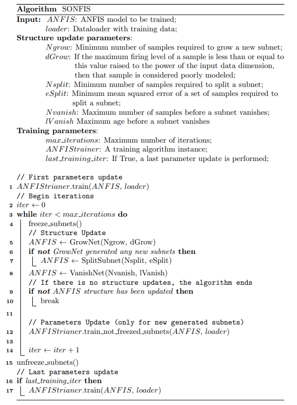

SONFIS
Este módulo contiene 2 implementaciones de la red SONFIS (Self-Organizing Neuro-Fuzzy Inference System) que es una red auto-organizada que combina el algoritmo para la actualización de parámetros clásico del modelo ANFIS con una serie de operaciones para el crecimiento y poda de subredes. Este método solo es aplicable a modelos ANFIS homogéneos con reglas reducidas.
Para más detalles sobre el algoritmo SONFIS, puede consultar el artículo original: SONFIS: Structure Identification and Modeling with a Self-Organizing Neuro-Fuzzy Inference System.
{kind=link}

SONFIS
- class neuro_fuzzy_toolbox.training.sonfis.SONFIS(Ngrow, dGrow, Nsplit, eSplit, Nvanish, lVanish, max_iterations, ANFIStrainer, validation=0, early_stopping=None, last_training_iteration=False)[source]
Bases:
base_model_trainerSelf-organizing neuro-fuzzy inference system algorithm. Usa el algoritmo de aprendizaje híbrido ANFIS para actualizar los parámetros del modelo junto con las operaciones GrowNet, SplitSubNet y VanishNet para actualizar su estructura. Esta clase herea de la clase base_model_trainer para algunos métodos en común.
Note
El modelo ANFIS al que se le aplique debe ser rule-reduced, por lo que será una instancia de la clase h_ANFIS.
- __call__(ANFISmodel, loader, verbose=True)[source]
Ejecuta el algoritmo SONFIS.
- Parameters:
ANFISmodel (h_ANFIS) – Instancia del modelo ANFIS reducido en reglas.
loader (DataLoader) – Instancia de DataLoader.
verbose (bool) – Si es True, imprime el progreso del entrenamiento (Default: True).
- __init__(Ngrow, dGrow, Nsplit, eSplit, Nvanish, lVanish, max_iterations, ANFIStrainer, validation=0, early_stopping=None, last_training_iteration=False)[source]
Inicializa una nueva instancia de SONFIS.
- Parameters:
Ngrow (int) – Número mínimo de muestras mal modeladas para crecer una nueva subred.
dGrow (float) – Si el nivel de disparo máximo de una muestra es menor o igual a este valor elevado a la dimensión de los datos de entrada, entonces dicha muestra se considera mal modelada.
Nsplit (int) – Número mínimo de muestras para dividir una subred.
eSplit (float) – Error cuadrado medio mínimo de un conjunto de muestras para dividir una subred.
Nvanish (int) – Número máximo de muestras para desvanecer una subred.
lVanish (int) – Edad máxima para desvanecer una subred.
max_iterations (int) – Número máximo de iteraciones.
ANFIStrainer (ANFIS learning algorithm instance) – Instancia de algún algoritmo de entrenamiento para los modelos ANFIS. Básicamente define la manera en la se actualizarán los parámetros del modelo.
validation (float) – Porcentaje de los datos destinados a validación. Si es 0, no se realiza validación (Default: 0).
early_stopping (EarlyStopping) – Instancia de EarlyStopping (Default: None).
last_training_iteration (bool) – Indica si se debe realizar una última actualización de parámetros después de que el algoritmo SONFIS finalice (Default: False).
alternative SONFIS
- class neuro_fuzzy_toolbox.training.sonfis.alt_SONFIS(Ngrow, dGrow, Nsplit, eSplit, Nvanish, lVanish, max_iterations, ANFIStrainer, validation=0, early_stopping=None, last_training_iteration=False)[source]
Bases:
SONFISSelf-organizing neuro-fuzzy inference system algorithm. Es una implementación alternativa de SONFIS que utiliza un enfoque diferente para las operaciones GrowNet, SplitSubNet y VanishNet.
La única diferencia, además de la implementación de las operaciones, está en el operador VanishNet, que en este caso la edad de las subredes aumenta siempre que no alcancen a modelar Nvanish muestras y solo se reinicia si se supera dicho valor. (En el caso de SONFIS, la edad de una subred aumenta siempre que esta no mejore y se reinicia si lo hace).
- __call__(ANFISmodel, loader, verbose=True)
Ejecuta el algoritmo SONFIS.
- Parameters:
ANFISmodel (h_ANFIS) – Instancia del modelo ANFIS reducido en reglas.
loader (DataLoader) – Instancia de DataLoader.
verbose (bool) – Si es True, imprime el progreso del entrenamiento (Default: True).
- __init__(Ngrow, dGrow, Nsplit, eSplit, Nvanish, lVanish, max_iterations, ANFIStrainer, validation=0, early_stopping=None, last_training_iteration=False)[source]
Inicializa una nueva instancia de alt_SONFIS.
- Parameters:
Ngrow (int) – Número mínimo de muestras para crecer una nueva subred.
dGrow (float) – Nivel mínimo de disparo para crecer una nueva subred.
Nsplit (int) – Número mínimo de muestras para dividir una subred.
eSplit (float) – Error mínimo para dividir una subred.
Nvanish (int) – Número mínimo de muestras para desvanecer una subred.
lVanish (int) – Edad máxima para desvanecer una subred.
max_iterations (int) – Número máximo de iteraciones.
ANFIStrainer (Hybrid_learning_algorithm) – Instancia del algoritmo de aprendizaje híbrido. Se utiliza para obtener sus parámetros, ya que el algoritmo de actualización de parámetros híbrido del modelo ANFIS clásico es por defecto el aplicado en SONFIS.
validation (float) – Porcentaje de división de validación. Si es 0, no se realiza validación (Default: 0).
early_stopping (EarlyStopping) – Instancia de EarlyStopping (Default: None).
last_training_iteration (bool) – Indica si se debe realizar una última actualización de parámetros después de que el algoritmo SONFIS finalice (Default: False).